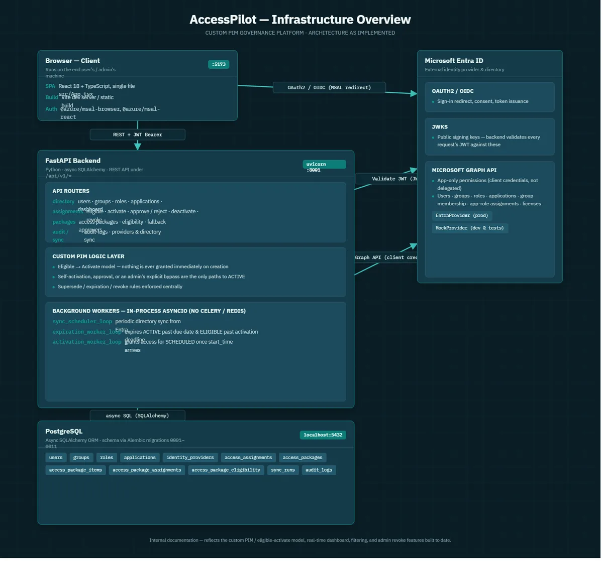

AccessPilot: identity governance platform
A governance layer over Entra ID, Okta and Active Directory that controls who has access to what, for how long, and under whose approval.
Personal project
- Python / FastAPI
- PostgreSQL
- React / TypeScript
- Graph API
- Okta
- LDAPS
- SoD
- Access Reviews
Read case study: AccessPilot: identity governance platform
Problem
Directories like Entra ID, Okta or Active Directory handle authentication, but none provides an end-to-end request, approval, activation, expiry and review lifecycle across several directories.
Approach
FastAPI backend with PostgreSQL and a React/TypeScript frontend. One shared connector interface for Entra ID (Graph API), Okta, Active Directory (LDAPS) and CSV/HR feeds, with a joiner-mover-leaver engine, birthright policies, access packages, business roles, multi-stage workflows, separation of duties, access reviews, an entitlement catalog and audit logging on top.
Result
A working IGA platform with HR pull sync, multi-directory provisioning, self-healing background workers and break-glass access, documented in a full architecture reference.
